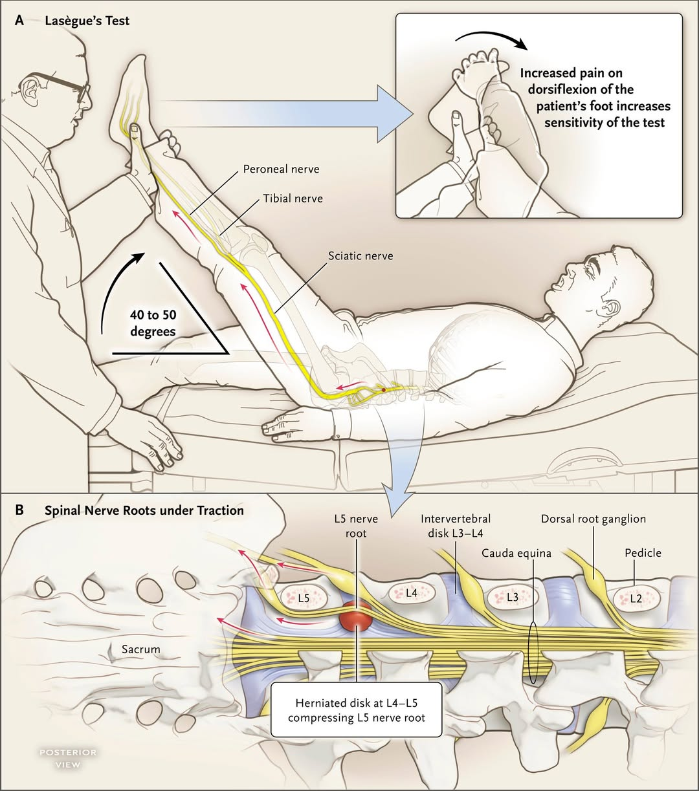
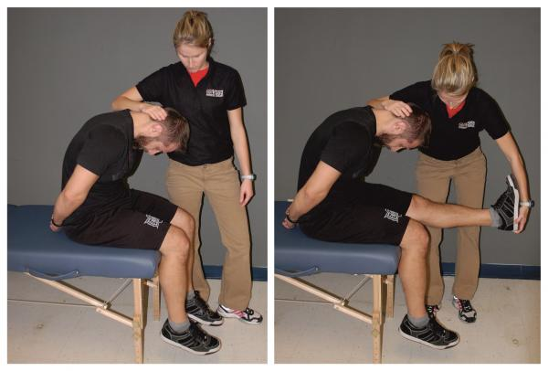
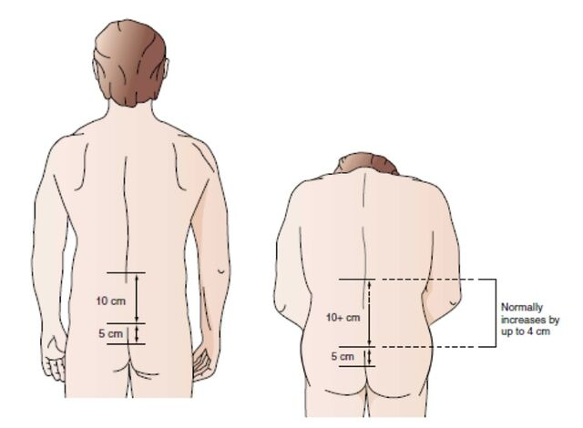

BACK PAIN
Universal Musculoskeletal History Structure
All musculoskeletal pain cases use the same 4-step structure:
Step 1 – Initiation
- Introduce yourself
- Open-ended question
- Do not panic
- Smooth start
Step 2 – Explore the Pain
- Detailed characteristics
- Pattern of pain
- Night pain
- Neurological symptoms
- Activity vs rest
Step 3 – Rule Out Differentials
- You must rule out:
- Red flags
- Serious causes
- Red flags
- You do NOT need to ask every single rare cause
- But red flags must be asked
Step 4 – Closure
- When done:
- Past history
- Medications
- Family history
- Past history
- Then finish
“No history is complete without red flags.”
Your next patient is a 32 year old man who has presented to your General Practice complaining of low back pain.
Task:
- Take history from the patient - You will have a prompt time at 6 minutes
- Physical examination will appear on the screen at 6 minutes
- Explain diagnosis and differentials
AMC Practical Differential List
The lecturer reorganizes everything into 4 big groups
Group 1 – Spine
- Mechanical (non-specific) back pain
- Lumbar radiculopathy
- Spinal canal stenosis
- Fractures (all types): pathological, osteoporosis
- Sacroiliitis
Group 2 – Red Flags
These must always be ruled out:
- Malignancy & metastasis
(even in young patients) - Infection
- Cauda equina syndrome
- Multiple myeloma
Group 3 – Arthritis
- Osteoarthritis
- Rheumatoid arthritis
- Psoriatic arthritis
- Ankylosing spondylitis
- Reactive arthritis
(grouped with IBD)
Group 4 – Referred Pain
- KUB
- Kidney stones
- Pyelonephritis
- Kidney stones
- GI
- Cholecystitis
- Pancreatitis
- Cholecystitis
- Pelvic
- Endometriosis (always ask about period history in women above age 50 years)
- Prostatitis
- Endometriosis (always ask about period history in women above age 50 years)
- Retroperitoneal hemorrhage: due to blood thinners
9. Key Medication Associations
Always ask about:
Medication | Why |
Warfarin | Retroperitoneal hemorrhage |
Steroids | Osteoporosis |
Statins | Myositis |
IV drugs | Infection, myeloma |
10. Pattern of Pain (Mechanical vs Inflammatory)
This is a core OSCE discriminator
Inflammatory Arthritis
- Worse with rest
- Worst in the morning
- Improves with activity
Mechanical Pain
- Fine in the morning
- Worse with activity
- Worst at end of the day
11. Back Pain–Specific Clues
Pattern | Suggests |
Worse with sitting, better with standing | Disc prolapse / radiculopathy |
Worse with standing & walking | Spondylolisthesis |
Worse with cough or sneeze | Discogenic pain |
12. Other Key Screening Questions
- Rash → psoriasis arthritis
- Penile discharge → reactive arthritis
- Eye symptoms → IBD-related arthritis
- Neurological symptoms → radiculopathy, stenosis, cauda equina
- Stress at home or work → Function at work & home
13. Red Flags for Back Pain
Must be asked:
- Past cancer (prostate, breast)
- Unexplained weight loss
- Night pain
- Cough / breast lump (lung & breast metastasis)
- Neurological deficit
- Medications (warfarin, steroids)
- Cauda equina:
- Saddle numbness (numbness in the private parts)
- Incontinence
- Saddle numbness (numbness in the private parts)
HISTORY TAKING FRAMEWORK
STEP 1 – INITIATION PHASE
1. Open-ended opening
“Hi, my name is Amir, what’s your name?”
“Gary. How can I help you today?”
“How can I help you today?”
“Can you tell me more about your pain?”
The patient will then give:
“Doctor, I’ve been having this back pain in the lower side. It started five days ago when I was lifting a heavy box at work. I felt a sudden stab of pain and it’s not getting better and I’m worried.”
This already gives:
- Site
- Time
- Trigger
- Concern
2. Address the hidden concern
If the patient expresses worry:
“I understand your concern. Thank you for coming in for assessment. I’ll ask you a few questions, examine you and try to find the cause and make the best management plan for you.”
This is the only empathy point.
3. Painkiller question (optional, fast)
Two questions only:
“Are you in pain now?”
If yes:
“Would you like a painkiller?”
Do not ask about allergies or intensity here.
Move on.
STEP 2 – EXPLORING THE PAIN
A. Characteristics of Pain – SIQORAA
S – Site
“Can you tell me the exact site of the pain?”
I – Intensity
“From a scale of 1 to 10, where 10 is the worst pain you’ve ever had and 1 is the least, how bad is your pain?”
Q – Quality
Give examples if role player acts stupid and ask what is quality of pain:
“about the quality of the pain, Is it dull, sharp, or burning?”
O – Onset
- “When did it start?”
- “Is it on and off or constant?”
- “Is it getting worse?”
- “Is this the first time you’ve had this problem?”
R – Radiation
“Does the pain travel or radiate anywhere?”
A1 – Alleviating & Aggravating
General:
“Does anything make it better or worse?” (mostly they do not answer this question.)
therefore, ask Specific:
“Is your pain worse on coughing or sneezing?”
“Is your pain worse when sitting or standing?”
A2 – Affect on life
“How is this affecting your work and daily activities?”
B. Pattern of Pain
- “Do you have pain at night that wakes you up?”
- “Is it worse in the morning or at the end of the day?”
- “Is it worse with activity or after resting?”
STEP 3 – DIFFERENTIAL DIAGNOSIS
A. General Musculoskeletal Questions (Always first)
Ask all four:
- Swelling
- Redness / rashes
- Stiffness
- Previous or recent trauma or injury
B. Red Flags
1. Malignancy
- Weight loss (LOW)
- Loss of appetite (LOA)
- Lumps / lymph nodes
- Tiredness
- Previous history of cancer
- Do u have any Cough from prolonged time
- Any history of Breast lump
(Main cancers: prostate, breast, lung)
2. Cauda Equina
“have u noticed Any numbness in your private parts?”
“have u lost control of bladder or bowel?”
3. Infection
“Any fever or chills?”
4. Multiple Myeloma (elderly)
- H/O Recurrent infections
- Increased thirst
C. Spine Differentials
1. Mechanical back pain
“What is your occupation?”
Ask about:
- Heavy lifting
- Long standing
- Repetitive bending
- Excessive exercise: any out of usual exercise?
2. Lumbar Radiculopathy
“Any pins and needles or numbness in the legs?”
“Have u noticed Any weakness in moving your legs?”
D. Arthritis Differentials
1. Osteoarthritis
“have u noticed Any grating or cracking sound when you move or bend your spine?”
2. Rheumatoid Arthritis
- Any Family history of arthritis
- Any other joint pain
3. Psoriatic Arthritis
“Any rashes on your elbows or knees?”
4. Ankylosing Spondylitis
“Any difficulty or restriction in bending forward or moving your back?”
5. Reactive Arthritis
GI:
“Any diarrhea or blood in stools?”
STI:
“Any discharge from penis/vagina?”
“Ever been diagnosed with STI?”
“Do you practice safe sex?”
E. Referred Pain
1. KUB
- Dysuria: any pain or stinging while passing urine?
- Frequency: are you passing urine more frequently?
- Hematuria: is there any blood in urine?
- Nocturia: do you wake up in the middle of the night to pass urine?
2. GI
- Abdominal pain
- Nausea / vomiting
- Diarrhea
3. Gynecological (women)
- Have u had any history of Irregular periods
- Heavy bleeding
- Severe pain on period
- Menopause symptoms / have you noticed any hot flushes
4. Retroperitoneal hemorrhage
“Are you on blood thinners?”
Also:
- Steroids
- Cholesterol or fat lowering medications
- Do u use any drugs?
STEP 4 – CLOSURE
SADMA
- Smoking
- Alcohol
- Drugs
- Medications
- Allergies
Other
- Past medical history
- Family history (especially joint disease)
History END
KEY CLINICAL POINTS FROM LECTURE
Lumbar radiculopathy causes
- Disc prolapse
- Tumour
- Metastasis
- Osteophytes
- Narrowed intervertebral foramen foramen
Bone metastases
Main:
- Prostate
- Breast
- Lung
Also:
- Melanoma
- Thyroid
- Kidney
Multiple myeloma
- Triad: Anemia, back pain, Elevated ESR
Features:
- Bone pain
- Bone tenderness
- Weakness, tiredness, increased thirst
- Recurrent infections
Spinal canal stenosis
- Leg pain on walking
- Gets better when leaning forward
Ankylosing spondylitis
- Usually insidious onset of inflammatory back and buttock pain
- Key criteria:
- Low back pain > 3months
- Morning stiffness > 30 minutes
- Wake up in the second half of night
- Improvement with exercise not with rest
- Limitation of lumbar spine motion (Flexion)
- Bamboo spine
Reactive arthritis
- After diarrhea or STI
- Secondary to:
- Acute Urogenital infection ( Usually Chlamydia)
- Enteric infection ( Salmonella, Shigella )
- Usually 1-3 weeks post infection
CASE 1 — LUMBAR RADICULOPATHY
Your next patient is a 32 year old man who has presented to your General Practice complaining of low back pain.
Task:
- Take history from the patient - You will have a prompt time at 6 minutes
- Physical examination will appear on the screen at 6 minutes
- Explain diagnosis and differentials
History Findings
- Pain after lifting a heavy box at work
- 5 days of pain
- Not improving
- The most severe pain after having a kidney stone
- Pain radiating to left leg
- Numbness in legs
- On statins
- Father died to aneurysm
Interpretation of History
- Radicular pain = pain radiating to lower limb
- Neurological deficit present
- No red flags
- No referred pain features
PHYSICAL EXAMINATION – KEY STRUCTURE
Findings Provided
- Inspection and Palpation of spine : Normal
- SLR positive on 40deg right side, 60deg left side
- Knee reflex is absent
- Loss of sensation on inner part of calf and foot
- (Some cases: Ankle reflex decreased, sensory loss on sole )
- (In some cases Slump test + )
HOW TO INTERPRET EXAMINATION
1. General appearance
- Always consider temperature
2. Palpation
- Point tenderness on vertebrae (e.g., T10, L2, L3)
→ think malignancy / metastasis / fracture - Paravertebral muscle tenderness
→ think mechanical back pain
3. Straight Leg Raise (SLR) Test

- Only pain between 30–70° suggests radiculopathy
- Pain at 10° = not radiculopathy
- Pain at 90° = non-specific
Crossed SLR
- Lft 40 Rt 60, why both?
- Coz Pain in affected side when testing opposite leg
→ Specific for radiculopathy
Slump Test

- Pain when extending knee while sitting
→ Disc prolapse / radiculopathy
FINAL DIAGNOSIS
Lumbar radiculopathy
HOW TO EXPLAIN IT TO THE PATIENT
“Most likely you have a condition called lumbar radiculopathy.
This means the nerves coming out of your spine are under pressure.
This is most likely happening because of a tear in a cushion-like structure called a disc.”
REASONING TO PATIENT
- Pain radiates to leg
- Numbness present
- SLR positive
DIFFERENTIAL DIAGNOSES
Example dialogue
“I was thinking about infection like osteomyelitis, but you don’t have fever.”
“I was thinking about cancer, but you are not losing weight.”
“I was thinking about cauda equina, but you don’t have numbness in private parts.”
Then list:
- Osteoarthritis
- Ankylosing spondylitis
- Rheumatoid arthritis
- Reactive arthritis
- Spinal canal stenosis
- Sacroiliitis
- Kidney stones
- Prostatitis
CASE 2 — MECHANICAL NON-SPECIFIC BACK PAIN
Your next patient is a 32 year old man who has presented to your General Practice complaining of low back pain.
Task:
- Take history from the patient - You will have a prompt time at 6
- minutes
- Physical examination will appear on the screen at 6 minutes
- Explain diagnosis and differentials
History Findings
- Pain after lifting a heavy box at work
- 5 days of pain
- Not improving
- No radiation
- No numbness or weakness
- No red flag
Physical examination findings
- Inspection normal
- Palpation: Tenderness on paravertebral muscles
- Movements restricted due to pain
- Neuro examination: normal
- SLR normal: SLR positive 10 degrees is still normal, can be given to confuse.
Diagnosis
mechanical Non-specific back pain
Explanation
“This means the pain is caused by painful contractions and tightening of the muscles (spasm).”
Reasons
- No radiation of pain
- No neurological signs
- Muscle tenderness
- No features of nerve being under pressure
CASE 3 — MALIGNANCY / METASTASIS
Your next patient is a 65 year old man who has presented to your General Practice complaining of low back pain.
Task:
- Take history from the patient - You will have a prompt time at 6 minutes
- Physical examination will appear on the screen at 6 minutes
- Explain diagnosis and differentials
History Findings version 1
- 5 days of pain
- Not improving
- No radiation
- No numbness or weakness
- Has lost weight, 4 kg in the last few months
History Findings version 2
- 5 days of pain
- Not improving
- radiation
- numbness or weakness
- Has lost weight, 4 kg in the last few months
Physical Examination
- Inspection normal
- Palpation: Tenderness on T10 vertebral body
- Painful movements of thoracic and lumbar spine
- Neuro examination: either normal or sensory loss
- Either SLR normal or positive 40/60 degrees
Diagnosis
Malignancy or metastasis
How to tell patient
“Low back pain can have many causes, but in your case I am concerned about cancer or spread of cancer to the spine.”
Reasons
- Weight loss
- On physical examination, when I press on part of the spine it is painful.
Top Differentials
- Malignancy / metastasis
- Multiple myeloma
- Vertebral fracture
CASE 4 — ANKYLOSING SPONDYLITIS
Your next patient is a 32 year old man who has presented to your General Practice complaining of low back pain.
Task:
- Take history from the patient - You will have a prompt time at 6
- minutes
- Physical examination will appear on the screen at 6 minutes
- Explain diagnosis and differentials
History Finding
- Pain on and off for 10 years
- Worse after bending forward a few days ago
- Site in lower back
- No radiation
- No numbness or weakness
- No loss of weight
- Pain in morning and worst with rest
Physical Exam Finding
- Inspection normal
- Palpation: Normal
- Restricted movements of the spine
- Schober test → 16cm after bending forward
- SLR normal
- Neuro exam normal
Schober’s Test

- 10 cm above PSIS (posterior superior iliac spine)
- 5 cm below
- Normal = increase to 20 cm
- <20 cm = restricted flexion
Diagnosis
Ankylosing spondylitis
Explanation
“This is an autoimmune condition where your immune system attacks your spine and causes inflammation.”
Reasons
- Long history of back pain
- Inflammatory pain
- On P/E, u have Restricted bending of back
Differentials
- Lumbar radiculopathy
- Rheumatoid arthritis
- Infections
- Cauda equina
- Malignancy
- Multiple myeloma
- Reactive arthritis
- IBD
- Kidney pain
- Prostatitis
Next possible case multiple myeloma
MANAGEMENT — MECHANICAL BACK PAIN
Core Points
- Reassure> its just a MSK pain means just contraction of muscles and is not related to spine
- I would like u to have Rest but Stay active: do daily activity at home
- No imaging needed for now
- Regarding pain I will prescribe you NSAIDs or paracetamol
- I will refer you to Physiotherapist/ chiropractor: they will work on strengthing and stretching exercises
- I will see u again >Follow-up 2–4 weeks
Return to Work Plan: I will provide a return to work plan for u.
- I will give u a medical certificate for a certain period of time
- Usually one or two weeks
- Usually one or two weeks
- You bring the patient back for follow-up
- Then you decide whether he is:
- Fit to go back to work
- Fit to return to work
- Return to work with modified duties
- Fit to go back to work
Example scenario given
The patient:
- Is a tradie
- Lifted a heavy box at work
- His regular job involves lifting boxes
- But he can also work in an office
What you do
You:
- Send a letter to the employer
- You ask:
“Can you please just be a little bit nice to him, let him have the office job for the next eight weeks” - You:
- Follow him up
- See how his back pain goes
- Follow him up
MANAGEMENT — LUMBAR RADICULOPATHY
- Conservative management 6–8 weeks
- Rest but Stay active
- MRI only if severe or progressive deficit
- Pain relief
- Preferably NSAIDs
If pain gets worse and u have severe and progressive symptoms
1. Imaging
- In AMC:
- I will advise >MRI is your choice
- You do a spine MRI scan
- I will advise >MRI is your choice
2. Steroid injection
- A steroid injection beside the spine
- Close to the nerve root
- Used as a:
- Short-term
- Temporary pain relief option
- Short-term
3. Specialist referral
- If the patient does not get better:
- Refer to a neurosurgeon
- Refer to a neurosurgeon
Red Flags in Lumbar Radiculopathy
“As always… I will give red flags”
The red flags are:
- Neurological deficit getting worse
- Cauda equina syndrome
What this means in the exam
If the patient has:
- Numbness getting worse
- Pins and needles getting worse in the leg
- Weakness getting worse
- Incontinence
- Leaking urine
- Leaking stools
- Leaking urine
KEY EXAM PEARLS
- SLR sensitive, not specific
- Crossed SLR is specific
- Point vertebral tenderness = malignancy or fracture
- Paravertebral tenderness = mechanical pain
- Weight loss = red flag